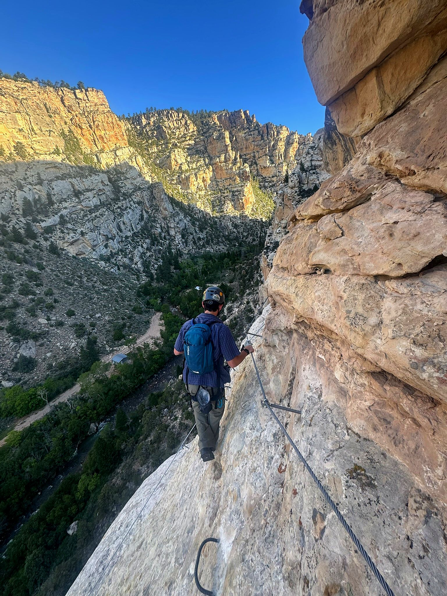

Full kit
Helmet, harness and energy-absorbing lanyard. Everything one climber needs.
$1 day$2 days


A via ferrata is a climbing route built with steel cables, iron rungs and bridges bolted into the rock. You clip a two-armed lanyard to the cable and stay attached the whole way. Ashley Gorge is one of the longest public routes in the country. The route is free. The gear is required.
No counter and no shop hours. Everything happens on your phone before you reach the lot.
One day (24 hours) or two (48 hours). You'll see what's left before you book.
Fitting the harness, clipping in and the hazards on this route.
Every adult climber signs online. Parents sign for climbers aged 14 to 17.
Save your pass to your phone. There's no signal at the gorge.
Grab your kit at the trailhead, climb, and lock it back up when you're done.

Certified gear, inspected between every rental.
Helmet, harness and energy-absorbing lanyard. Everything one climber needs.

For climbers who bring their own helmet and harness.

UIAA and EN 12492 certified. Add one if you are missing it.

UIAA and EN 12277 certified, adjustable leg loops.
The lockers sit at the Ashley Gorge trailhead, about 15 minutes north of Vernal. Park, grab your gear and start the approach. No stop in town.
Save your pass and locker code before you leave Vernal.
Uintah County requires its own waiver for every climber. Sign it here.
Most of the route is in full sun and there's no water at the trailhead.
Hiking or approach shoes with good grip. No sandals.
Summer afternoons get hot, and storms build fast. Lightning and steel cables don't mix.
Cables get hot and rough on your hands. There's nowhere to buy food nearby.





Call, text or email. We'll help with gear, sizing, the route and how the lockers work.
Book gear